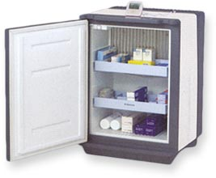

Your equipment and staff don't always stay within the walls of your hospital, so why should your ability to monitor and track them? Now, monitoring and tracking capabilities are no longer limited to a single facility, but can extend to your entire community.
We provide a wide-area platform that does the jobs commonly performed by a variety of single-purposed monitoring and tracking systems, each of which require their own unique infrastructure. Unlike Wi-Fi or RFID solutions, there are no access points or RFID readers to install and maintain in your facility, and no special software is required - just a standard web browser.

RECON can help you use your facility, equipment and personnel more efficiently, saving you time and money:
- Monitor and create an automated log of the temperatures of drug refrigerators
- Monitor the temperature of cryogenic freezers and receive an alert if the temperature begins to rise
- Monitor entry and exit doors
- Monitor server room and elevator machine room temperatures
- Keep track of high-value portable medical devices like infusion pumps for service areas supporting real-time location
- Locate personnel in real-time, whether located on your campus or in the community